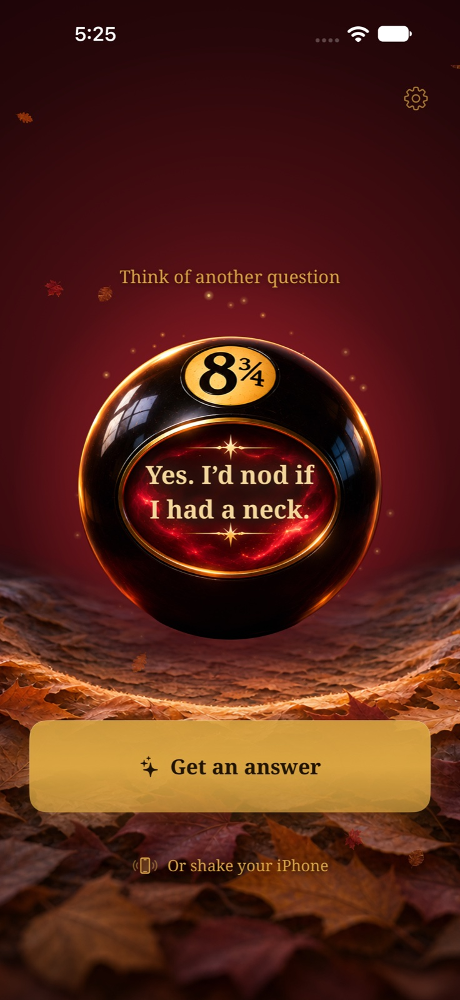
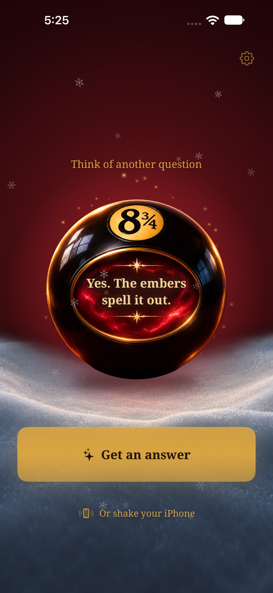
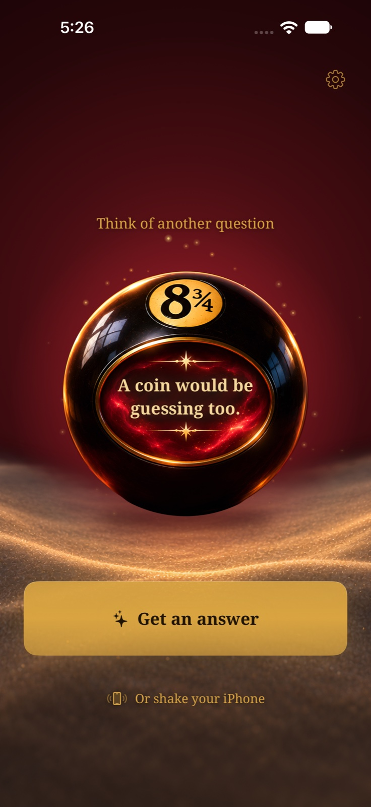

Choose your voice
Classic brings a dry sense of humor. Fantasy speaks in omens, spells, and a little old magic.
A FORTUNE BALL FOR IPHONE
A question on your mind? Tap or shake your iPhone. Let the smoke clear, and see what the ball has to say.
Made for iPhone · iOS 18 or later

A little suspense. Then, an answer.
MORE THAN YES OR NO
A playful ritual, a changing world, and a ball you can make your own.
Classic brings a dry sense of humor. Fantasy speaks in omens, spells, and a little old magic.
Write your own answer sets in My Ball. Inside jokes, family favorites, or whatever sounds like you.
Autumn leaves, winter snow, spring blossoms, and summer warmth. A different atmosphere for every season.
ONE BALL. DIFFERENT WORLDS.


KEEP YOUR QUESTION TO YOURSELF
No account. No ads. Works offline. Your own answers stay on your iPhone.
A little fun, for entertainment. The big decisions are still yours.